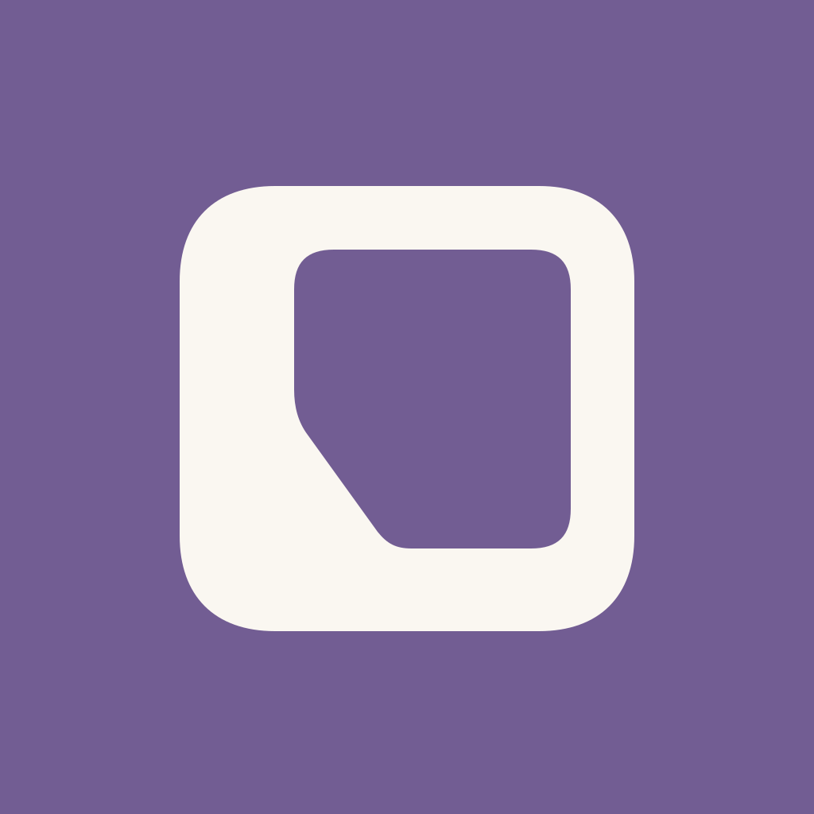
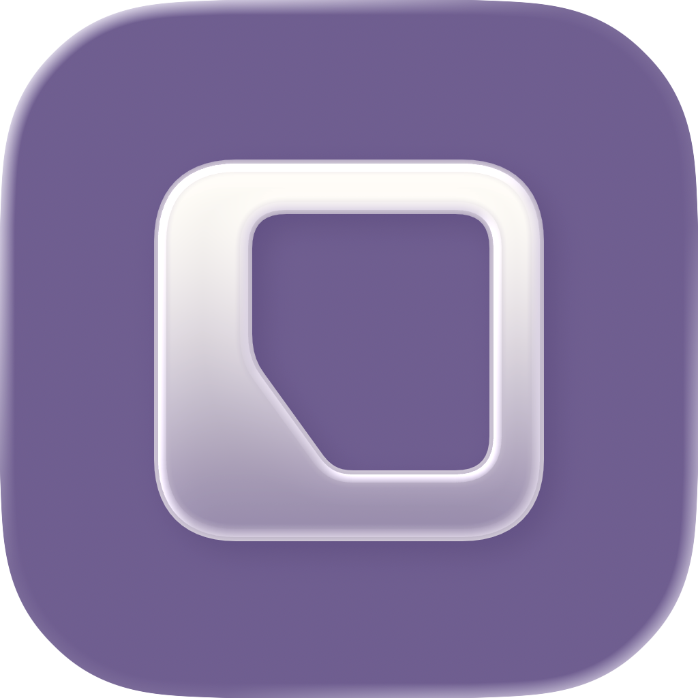
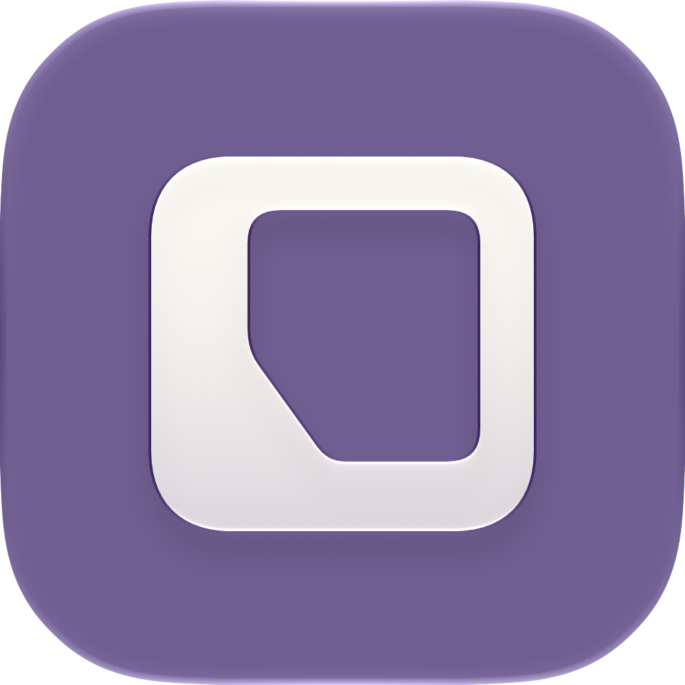

保留轮廓，让边缘受光，下半部轻轻透出紫色。


图片由本机 Icon Composer 27.0 的官方渲染器导出。当前前景透光值为 0.65；原生默认值 0.30 的磨砂对照如下。

最新可编辑文件：CheckLine-Glass-Dark.icon，在 Finder 中双击即可用 Icon Composer 打开。SVG 未烘焙高光，玻璃材质仍可继续调整。
CheckLine-Glass-Dark.icon
深色前后对照 · Apple Icon Composer · 回到轮廓精修